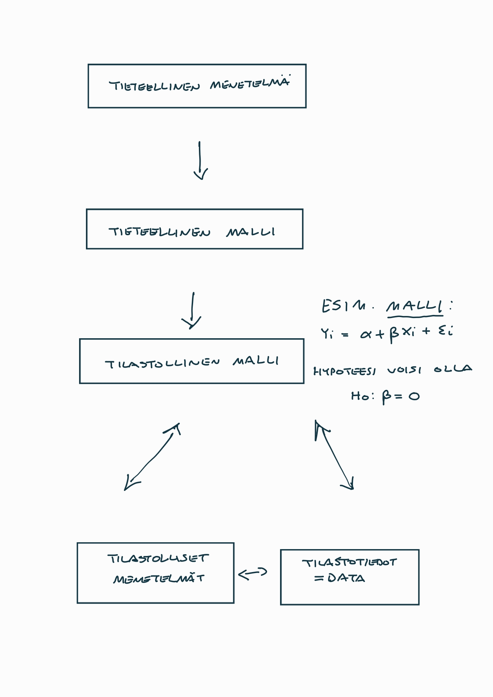

2 Tieteellinen tieto, tilastot ja arkitieto yhteiskunnassa
Tiedelukutaito Tässä luvussa tarkastellaan tieteen ja tieteellisen tutkimusprosessin luonnetta erityisesti uuden tutkitun tiedon tuottamisen näkökulmasta.
Tieteellinen tutkimus ja asiantuntijatyö tuottavat valtavan määrän perusteltua, luotettavaa tutkimustietoa. Vastuulliseesti tuotetut tiedeartikkelit tarjoavat tietoa siitä, kuinka tutkittua tietoa tuotetaan, julkaistaan ja arvioidaan luotettavasti ja yhteisesti hyväksytyllä tavalla. Jotta tiede vaikuttaa koko yhteiskunnan hyväksi, toiminnan on oltava vastuullista tutkimuksen jokaisessa vaiheessa.
Tiedeviestintä on tiedeyhteisöjen sisäistä ja ulkoista tiedonvälitystä ja vuorovaikutusta:
Julkisuus ja avoimuus tekevät tutkimuksesta tiedettä.
Tutkimuksesta viestiminen ei ole vain tutkimustuloksista viestimistä. Vastuullinen tiedeviestintä lisää luottamusta tieteelliseen tietoon.
Tieteellinen julkaiseminen on tutkijoille tärkeä meritoitumisen tapa, ja siksi on tärkeää, että tekijyys määritellään niin, että se palkitsee tutkijat oikeudenmukaisesti.
Tiedelukutaidon merkitys on kasvanut nyky-yhteiskunnassa. Tämä on osin tiedejulkaisujen saavutettavuuden ja tunnettavuuden lisääntymisen tulosta, mikä saattaa liittyä mm. tieteen popularisointiin ja median laajemman tiedeuutisointiin.
- Ks. tarkemmin tieteellisestä julkaisemisesta ja tutkimuksen tekemisestä Helsingin yliopiston tarjoaman Tiedelukutaidon perusteet -kurssin materiaalia seuraten, joka on julkaistu oheisena MOOC-kurssina (Massive Open Online Course):
- Keskustelethan ennen kurssin käymistä (jos siis haluat suorittaa ko. kurssin) oman alasi koulutussuunnittelijan (tai vastaavan vastuuhenkilön) kanssa siitä, soveltuuko kyseinen kurssi sisällytettäväksi johonkin omaan opintokokonaisuuteesi.
Esimerkki (tiedon rooli): Tiedon, erityisesti tieteellisen tiedon, rooli korostuu yhä enemmän kaikilla elämän osa-alueilla. Näistä muutamia esimerkkejä:
Terveysteknologia (esim. sykemittarit tai Oura-sormus) perustuu lääke- ja terveystieteellisiin läpimurtoihin.
Talouspoliittisia päätöksiä edeltää entistä suurempi määrä asiantuntijoiden taloustiedeperusteista (ei välttämättä kuitenkaan yksimielistä) analyysiä.
Jopa peruskouluopetus on murroksessa kasvatustieteen tutkimussaavutusten myötä.
Voidakseen ymmärtää ja arvioida kriittisesti tiedeuutisia tulee lukijan olla tietoinen tieteellisen tutkimuksen luonteesta, kuten:
miten tutkimusartikkeleja luetaan,
mitä niiltä voidaan odottaa, ja
minkälaiset tulokset ovat uskottavia?
Tilastotiede näyttelee keskeistä roolia lähes kaikessa tieteellisessä tutkimuksessa ja erityisesti erilaisten tutkimuskysymysten ja niitä vastaavien hypoteesien testauksessa.
2.1 Mitä on tiede?
Aloitetaan kurssin varsinainen oppimateriaali kunnianhimoisesti tarkastelemalla mitä tiede oikeastaan on (lopulta erityisesti tilastotieteen näkökulmasta).
Annetaan tieteen määritelmälle ensin muutamia pohtivia suuntaviivoja:
Tiede ja tietoTiede on järjestelmällistä ja järkiperäistä uuden tiedon hankintaa. Näin tiede määritellään toiminnaksi, jossa tavoitellaan ja hankitaan tietoa. (Lähde: Haaparanta ja Niiniluoto (2016, s.28) (Ks. Oheislukemistoa))
Tieteellinen tutkimus on tutkivan subjektin ja tutkimusobjektin välistä vuorovaikutusta.
Tiede pyrkii järjestämään tiedon yksinkertaisiksi kokonaisuuksiksi ja pyrkii löytämään säännönmukaisuuksia.
Tiede on siis tiedon hankintaa, jonka kohteena on meitä ympäröivä todellinen maailma sen ilmiöineen ja tapahtumineen. Tiedon hankinnalla tarkoitetaan kumulatiivista prosessia, jossa ympäröivän maailman ilmiöitä ja niiden välisiä suhteita:
selitetään,
niitä koskevia käsityksiä vahvistetaan osoittamalla ne tosiksi (tai päinvastoin), sekä
löydetään niistä uutta tietoa.
Tiede siis erottaa intuition ja “arkitiedon” oikeasta, tutkitusta tiedosta esittämällä reaalimaailmaa koskevia väitteitä ja osoittamalla ne tosiksi, tai epätosiksi, tieteellisin menetelmin.
- Tiede käsittää siis myös aiemman tutkimuksen ja se toimii kaiken tieteellisen tiedon jäsenneltynä kokonaisuutena.
Arkitieto ja tieteellinen tieto. Tieteen tekemiseen liittyvä vaatimus uudesta tiedosta kuitenkin sulkee tieteen ulkopuolelle toiminnot, joissa on kyse vain aikaisemmin hankittujen tietojen omaksumisesta ja järjestämisestä (Haaparanta ja Niiniluoto, 2016, s.28).
- Vrt. esimerkiksi opiskelu tai (useimmiten) myös erilaiset komitea- ja selvitystyöt.
Aikaisemmin hankittujen tietojen vahvistaminen ja todentaminen, eli uuden tutkimuksen tekeminen, on kuitenkin tiedettä sen tuottaessa uutta tietoa.
Tieteelle voidaan asettaa (ainakin) seuraavat kaksi sitä määrittelevää ominaisuutta (Haaparanta ja Niiniluoto, 2016, s. 29):
Järjestelmällisyys: Tieteellinen tiedonhankinta on yhteiskunnallisesti organisoitu tutkimusta tekevien (ja opetusta järjestävien) instituutioiden tehtäväksi, joka kokoaa tutkimustulokset systemaattisiksi tietojärjestelmiksi niin kansallisella kuin kansainvälisellä tasolla. Näihin instituutioihin lukeutuvat mm. yliopistot, korkeakoulut ja tutkimuslaitokset ja vastaavasti tietojärjestelmiksi mm. tieteelliset julkaisut. Tiede ylittää järjestelmällisyytensä vuoksi tiedostamisen “arkitason”.
Järkiperäisyys: Järkiperäisyyden vaatimus asettaa rajoitteita tieteelliselle ajattelutavalle. Tiede ei siis voi nojautua esim. yksilölliseen vaistoon tai intuitioon, suostutteluun, propagandaan tai “Jumalalliseen ilmoitukseen” tai vastaavaan.
Tieteen keskiössä on todellista maailmaa koskevat (tieteelliset) teoriat ja niihin liitettävät hypoteesit.
Tieteellinen teoria
Tieteellinen teoria. Tieteelliset teoriat ovat hyvin perusteltuja kuvauksia ja selityksiä siitä, miten ympäröivä maailmamme toimii tai esimerkiksi siitä miten eri ilmiöt ovat yhteyksissä toisiinsa. Ne ovat luotetuin, täsmällisin ja kattavin tieteellisen tiedon muoto. Teorian vahvuus riippuu siitä, kuinka laajoja ja erilaisia reaalimailman ilmiöitä sillä voidaan (yksinkertaisesti) selittää.
Esimerkkejä tieteelisistä teorioista ovat esim. Einstenin suhteellisuusteoria tai Darwinin evoluutioteoria.
Teoria muodostuu tieteellistä menetelmää käyttämällä ja se on kehittynyt ajassa kumulatiivisesti kertyneen tiedon myötä. Teoria muodostuu siis toistuvien sitä vahvistavien uusien havaintojen ja tutkimuksen myötä.
Tieteellisen teorian pyrkimys on selittää, ja/tai ennustaa, sen kohteena olevaa ilmiötä tyylikkäästi sekä yksinkertaisesti. Huomiona, että tässä yhteydessä ennustamisella tarkoitetaan yleismaailmallista ennustamista (ennakointia jne.), joka saattaa poiketa tarkemmasta tilastollisesta ennustamisesta.
Se on luonteeltaan induktiivinen ja alisteinen muutoksille tai jopa hylkäämiselle empiirisen todistusaineiston (“evidenssin”) osoittaessa sen olevan puutteellinen tai väärä.
Tieteellisen teorian tulee siis olla empiirisesti testattavissa/koeteltavissa ja sen tekemät ennusteet on tarvittaessa osoitettavissa vääriksi. Teoriaan liittyvät ennustukset määrittelevät sen hyödyllisyyden, sillä teoria joka ei tee testattavia ennustuksia on usein hyödytön.
Tieteelliset teoriat kehittyvät vuorovaikutuksessa todellisen maailman kanssa kun tieteellisessä tutkimuksessa niitä ja erityisesti niihin liittyviä hypoteeseja testataan ja saatuja tuloksia tulkitaan vallitsevien teorioiden valossa.
Jos tulokset ovat linjassa teorian tekemien ennustusten kanssa, teoria vahvistuu (se “verifioidaan”) ja riittävän evidenssin myötä se voidaan hyväksyä, eli siitä on tieteellinen konsensus, mitä voidaan pitää parhaana mahdollisena selityksenä kyseiselle ilmiölle ko. hetkellä (ja se voi ja usein kehittyykin jatkossa).
Jos tulokset poikkeavat teorian ennustuksista, ne tulkitaan teorian empiiriseksi vastaväitteeksi (“falsifikaatioksi”). Tällöin voidaan ensin tarkastella onko tulokset saatu uskottavalla tieteellisellä menetelmällä, ja mikäli näin on, ja seuraavatkin tutkimustulokset ovat vastaavia, teoriaa voidaan parantaa tai mahdollisesti muuttaa kokonaan.
Hypoteesi
Hypoteesi tarkoittaa esim. teorioista johdettua tai aikaisemman tutkimuksen perusteella esitettyä ennakoitua ratkaisua tai selitystä tutkittavaan ongelmaan.
Erityisesti ja myöskin tilastotieteen näkökulmasta hypoteesi ilmaistaan teoriaa koskevana väitteenä, jonka paikkansapitävyyttä halutaan tutkia. Käytännössä hypoteesit liittyvät tilastollisten mallien parametreihin (tähän palataan lyhyesti myöhemmin jo tällä kurssilla).
Hypoteeseja voidaan tilastollisesti testata ja näin saatavan empiirisen todistusaineiston perusteella voidaan hypoteesi/hypoteesit osoittaa vääriksi tai jättää voimaan.
Tiedon kumuloituminen
Edellä kuvattu tieteellisen tiedon kumuloituminen muokkaa teorioita vuosien saatossa täsmällisemmiksi ja paremmiksi kuvauksiksi ympäröivästä maailmasta.
- Yksittäinen (vahva) tutkimustulos on vasta alku ja vahvistettu tieto jostain ilmiöstä, yhteydestä tai vaikutuksesta syntyy monien mittausten ja tutkimusten jatkumona. Tietoa ei siis voida johtaa siitä, miltä asiat näyttävät, kuten on tyypillistä “arkiajattelussa”.
- On kuitenkin syytä huomauttaa että tieteellisetkään teoriat eivät ikinä ole (eikä niiden tarvitse olla) täydellisen täsmällisiä, jotta ne olisivat käyttökelpoisia ja hyödyllisiä.
- Teorianmuodostukseen liittyy keskeisesti tieteellinen menetelmä, johon taas liittyy teorioita koskevien hypoteesien testaaminen.
Esimerkkejä (ks. myös Haaparanta ja Niiniluoto, 2016, s. 130):
1900-luvun alussa klassinen newtonilainen fysiikka ei enää riittänyt selittämään kaikkia havaintoja, ja se täydentyi kahdella uudella teoriakokonaisuudella: kvanttimekaniikalla ja Einsteinin suhteellisuusteorialla.
Biologian alalla tapahtui vastaava murros: Darwinin Lajien synty (1859) esitti evoluutioteorian, joka myöhemmin yhdistettiin Mendelin perinnöllisyystutkimuksiin. Näin syntyi synteettinen evoluutioteoria, jota on sittemmin täydennetty mm. DNA:n rakenteen ja molekyylibiologian löydöillä.
Täyttävätkö nämä tieteellisen teorian määritelmät? Kyllä.
- Teoria on muodostunut tieteellistä menetelmää käyttäen (havainnot, kokeet, vertailut)
- Se on kumulatiivinen: uusia havaintoja ja teknologioita on lisätty ajan myötä
- Se on toistuvasti vahvistunut uusilla löydöillä (fossiilit, DNA, kokeelliset havainnot)
Tieteelliselle ajattelulle ja tiedon tuottamiselle on vastaavasti tunnusomaista, että se pohtii ja kehittelee (tutkimusalakohtaisia) paradigmojaan eli oman toimintansa perusteita (raameja). Paradigmat antavat suuntaviivoja ja viiteistöjä siitä, minkälainen tutkimus tuottaa uskottavia tuloksia.
Paradigma
Paradigma on tietyn alan oman tieteellisen toiminnan oppirakennelma, ajattelutapa ja peruste, joka mm. ohjaa tutkimuskysymysten asettelua, käytettäviä menetelmiä ja tulosten tulkintoja. Paradigmat elävät jatkuvassa muutoksessa tieteen kehityksen myötä.
Esimerkkeinä paradigmoista voitaneen ajatella mm. laskennallisuuden kasvamista tilastotieteen yhteydessä (laskentaintensiiviset menetelmät) sekä taloustieteen nk. “uskottavuusvallankumousta”, jossa tilastollisten menetelmien myötä taloustieteellisen tutkimuksen painopiste tuntuu siirtyneen vahvemmin ns. empiirisen kausaalitutkimuksen puolelle.
Paradigmojen ei pidä ajatella olevan kaavoihin kangistuneita ajattelu- ja menettelytapoja, jotka oikeuttavat vain tietynlaisen tutkimuksen tekemisen. Päinvastoin, paradigmat ovat ajan myötä kumuloitunutta tietoa siitä, mitkä toimintatavat ja menetelmät tuottavat uskottavaa, koko tiedeyhteisön hyväksymää tiedettä, joka täyttää hyvän tieteen kriteerit.
On kuitenkin mahdollista, ja käytännössä varmaa, että vallitsevat paradigmat myös ajoittain estävät osaltaan uusien tieteellisten löytöjen syntymistä: liian vahvasti alan paradigmojen kanssa ristiriidassa oleva tulos saattaa jäädä julkaisematta, mikäli tutkija ei pidä sitä lainkaan mahdollisena suhteessa vallitseviin paradigmoihin. Samoin on käytännössä varmaa, että vallitsevat paradigmat muuttuvat ajan myötä uusien löytöjen myötä.
2.2 Tilastollinen päättely, populaatio ja otos
Tieteellinen ajattelutapa Tieteilijät yleensä perustavat hypoteesinsa aikaisemmin tehtyihin havaintoihin joita ei voida selittää olemassa olevilla tieteellisillä teorioilla tyydyttävästi. Tilastollinen päättely Uuden tieteellisen tiedon tuottaminen ja jo tuotetun tiedon ymmärtäminen vaatii tieteellisen ajattelutavan omaksumista, jonka perustana on lähes aina tilastollinen päättely. Tilastollisen päättelyn perusteita tarkastellaan myös tämän kurssimateriaalin myötä.
Tilastollisen päättely mahdollistaa ja sen keskeinen tavoite on tehdä perusteltuja päätelmiä (yleistyksiä) tarkasteltavasta populaatiosta käytettävissä olevan aineiston, usein otoksen, perusteella. Tilastollinen päättely sisältää mm. hypoteesien testauksen, tilastollisten mallien tuntemattomien parametrien (optimaalisten) numeeristen arvojen eli estimaattien muodostamisen ja parametrien luottamusvälien määrittämisen.
Tilastollinen päättely perustuu siis tilastotieteen matemaattiseen perustaan ja teoriaan, joka mahdollistaa päättelyn luonteeltaan epävarman ja satunnaisen aineiston tapauksissa.
Esimerkiksi hypoteesien testaaminen osana tilastollista päättelyä on yhtäältä tieteellisten teorioiden kehittämistä ja vahvistamista ja toisaalta kritiikin keskiössä.
Hypoteesien asettaminen voidaan ajatella tutkittavaa ilmiötä koskeviksi ennustuksiksi, joita verrataan havaittuun aineistoon. Mikäli havaittu aineisto ei ole yhteensopivaa testattavan teorian tai siihen liittyvien hypoteesien kanssa, voidaan (hieman yksinkertaistaen) teoriaa kehittää paremmaksi. Tämä vuoropuhelu vie tiedettä eteenpäin ja tuottaa lisää tutkittua tietoa ympäröivästä maailmasta.
Määritellään tässä vaiheessa (melko yleisellä tasolla) populaatio ja otos. Näihin palataan useaan kertaan vielä myöhemmin tämän kurssin aikana.
Populaatio/perusjoukko
Populaatio eli perusjoukko. Konkreettinen tai hypoteettinen tutkimuskohteiden joukko, joka koostuu kaikista tutkimuksen kohteena olevista tilastoyksiköistä.
Tilastoyksikkö
Tilastoyksikkö ja tilastollinen muuttuja. Populaation muodostavilta tilastoyksiköiltä (populaation alkioilta) tarkastellaan tilastollisia muuttujia, joita voidaan mitata tai havaita. Ts. tutkimuskohteita kutsutaan tilastoyksiköiksi.
Otos
Otos on populaation osajoukko, jota käytännössä tutkitaan tilastollisia menetelmiä käyttäen.
2.3 Tieteelliset ja tilastolliset menetelmät
Milloin tutkimus sitten on tieteellistä? Tiede voidaan nähdä tiedonhankintana, jossa käytetään erityistä, mahdollisesti tilanteesta (sovelluksesta) riippuvaa, tieteellistä menetelmää eli metodia.
Tieteellinen menetelmä/metodi
Tieteellinen menetelmä on kullakin tieteen alalla vallitseva, ajan myötä kehittynyt ja nykyisten paradigmojen mukainen menettelytapa, jolla uutta tietoa tuotetaan ja vanhaa, mutta epävarmaa tietoa vahvistetaan.
Se ei ole selkeä työvaiheiden luettelo tai menetelmähakemisto, vaan yleisesti hyväksytty ja hyväksi todettu tapa pyrkiä totuuteen erilaisten tutkimusongelmien ratkomisessa.
Metodologinen pluralismi: Kaikkia menetelmiä voi soveltaa hyvin tai huonosti, mutta niitä voi käyttää myös luovasti väärin.
Hyvälle tieteelliselle menetelmälle voidaan lukea seuraavia kriteerejä (ks. esim. Haaparanta ja Niiniluoto, 2016, s. 38–40):
- Objektiivisuus ja loogisuus
- Tutkimuskohteesta voidaan saada totuudellista tietoa, jonka laadusta tutkijayhteisö voi olla (laajasti) yhtä mieltä. Tutkimuskohteen ominaisuudet ovat tutkijan mielipiteistä riippumattomia.
- Tieteellinen tieto tutkimuskohteesta syntyy tutkijan ja tutkimuskohteen vuorovaikutuksen tuloksena.
- Tiedon lähteenä on tutkimuskohteesta saatava kokemus.
- Kriittisyys
- Ilmenee niinä vaatimuksina, joita hypoteesin asettamiselle, testaamiselle ja hyväksymiselle on asetettu.
- Tieteellisten hypoteesien tulee olla testattavissa eli niillä täytyy olla yhdessä sopivien lisäoletusten kanssa sellaisia seurauksia, joiden totuus tai virheellisyys voidaan (julkisesti) tarkistaa.
- Autonomisuus
- Tieteen tulosten arvioiminen on (tiukasti ottaen) tieteellisen yhteisön oma asia, johon tieteen ulkopuolella olevat ryhmät eivät saa vaikuttaa.
- Ei ole hyväksyttävää vedota siihen, että väitteen totuus olisi toivottavaa tai epätoivottavaa esimerkiksi poliittisista, uskonnollisista tai moraalisista syistä.
- Edistyvyys
- Tieteen edistyminen merkitsee kasvun eli tulosten määrällisen lisääntymisen ohella sitä, että virheellisiä hypoteeseja tai teorioita korvataan uusilla tuloksilla, jotka ovat tosia tai ainakin vähemmän virheellisiä kuin aikaisemmat.
- Toistettavuus ja yleistettävyys
- Tieteen tulokset tulee olla muiden tutkijoiden toistettavissa (replikoitavissa).
- Toistettavuudelle (paikoin myös uusittavuudelle, joskin merkitys vaihtelee) on erilaisia määritelmiä (ks. alla).
Tarkastellaan lähemmin erästä määritelmää erilaisille toistettavuuden (replikoinnin) lajeille. Esittelemme tässä Hamermeshin (2007) esittämän erilaisten replikointien jaottelun:
- Puhdas replikointi: toinen tutkija, käyttäen täysin samaa tutkimusaineistoa ja samaa tilastollista menetelmää kuin alkuperäisessä tutkimuksessa, saa täsmälleen samat tutkimustulokset.
- Tilastollinen replikointi: toinen tutkija, käyttäen eri tutkimusaineistoa (otosta), joka on kuitenkin poimittu samasta populaatiosta, mutta samaa menetelmää, saa vastaavanlaisia tuloksia, jotka vahvistavat alkuperäisen tutkimuksen perustulokset.
- Tieteellinen replikointi: toinen tutkija, käyttäen samoja asioita mittaavaa tutkimusaineistoa, joka on kuitenkin kerätty eri populaatiosta, ja käyttäen samankaltaista, mutta ei identtistä menetelmää, saa vastaavanlaisia tuloksia, jotka vahvistavat alkuperäisen tutkimuksen perustulokset.
Malli Pyrittäessä jäsentämään ja ymmärtämään havaintoaineistoa, ja mahdollisesti tämän pohjalta ennusteita tehtäessä, tutkijat sanovat usein rakentavansa ja käyttävänsä tieteellisten teorioiden sijaan malleja. Mallin käsite palvelee monissa eri tehtävissä sekä tieteessä että sen ulkopuolella ml. konkreettiset työtehtävät monissa eri tapauksissa.
Malli on yksinkertaistettu (idealisoitu) esitys todellisuudesta. Niiden ajatuksena on tiivistää oleellista tietoa todellisuudesta (tarkasteltavasta ilmiöstä), minkä seurauksena ne ovat järjestään helpompia ymmärtää (ja tulkita) usein hyvin monimutkaiseen todellisuuteen verrattuna.
Tieteellinen malli Tieteellisten teorioiden sisältämiä väitteitä voidaan muotoilla tieteellisiksi malleiksi, joihin voidaan liittää hypoteeseja, joita testataan tieteellisin menetelmin käyttäen ilmiö(i)stä mitattua havaintoaineistoa.
Tieteelliset mallit ovat yksinkertaistuksia reaalimaailmasta ja ne kuvaavat tutkimuksen aihetta jostain näkökulmasta tarkasteltavana systeeminä.
Ajoittain tieteellisellä mallilla tarkoitetaan teoreettista mallia. Se muistuttaa (tieteellistä) teoriaa, mutta se ei kuitenkaan pyri olemaan yhtä tarkka kuvaus tarkasteltavasta ilmiöstä (ks. esim. Haaparanta ja Niiniluoto, 2016, s. 60)
Yksi teoreettisen mallin muoto on matemaattinen tai tilastollinen (teoreettinen) malli, joka tyypillisesti koostuu joukosta yhtälöitä ja erilaisia matemaattisia merkintöjä.
Simulointi
Esimerkiksi simulaatiomallit tarjoavat mahdollisuuden tarkastella miten (teoreettinen) malli käyttäytyy käytäntöä vastaavissa tilanteissa pyrittäessä jäljittelemään mahdollisesti monimutkaisenkin kohdesysteemin toimintaa. Näitä voivat olla esim. sää tai (makro)taloutta koskevat mallit. Simulaatiomalleihin liittyy myös usein melko arkikielessäkin nähtävät viittaukset Monte Carlo -menetelmiin, jotka ovat esimerkkitapauksia simulointiin perustuvista tilastollisista menetelmistä.
Vaikka malli ei ole itsessään teoria tai sellaisen ehdotus, se voi kuitenkin olla käyttökelpoinen uusien teorioiden kehittelyssä ja vanhojen laajentamisessa.
- (Tilastolliset) mallit hyödyntävät matemaattista esitystapaa, sillä se tarjoaa formaalin ja objektiivisen tutkimusaiheen kuvauksen sekä mahdollistaa siihen liittyvän loogisen päättelyn käytettävissä olevan aineiston pohjalta.
Tilastollinen malli
Tilastolliset mallit ovat käytännössä tieteellisiin malleihin kuuluvia formaaleja tilastomatemaattisia malleja ja yksinkertaistuksia todellisuudesta. Tilastollinen malli auttaa ymmärtämään ja ennustamaan mallin taustalla olevan tai olevien satunnaismuuttujien käyttäytymistä. Malli koostuu matemaattisista yhtälöistä, jotka kuvaavat, miten muuttujat liittyvät toisiinsa ja miten ne jakautuvat.
Mallit sisältävät tuntemattomia parametreja, joiden arvot estimoidaan (arvioidaan) datan perusteella.
Mallien avulla voidaan tehdä päätelmiä ja halutessamme myös ennusteita.
2.4 Tilastojen yleisestä roolista yhteiskunnassa
Tilastotiedot Ihminen ei voi (nykyaikana) toimia maailmassa järkevästi, ellei hän pysty muodostamaan oikeata kuvaa maailmasta ja sen tilasta. Yhteiskunnan kaikilla sektoreilla toiminnan seuranta, päätöksenteko ja ennakointi perustuvat oikein niitä kuvaaviin ja ajantasaisiin (tilasto)tietoihin ja niiden analysoinnissa käytettäviin tilastollisiin menetelmiin.
- (Tilasto)tietojen saatavuutta voidaan pitää jopa toimivan demokratian edellytyksenä! Tilastolliset menetelmät
Esimerkki: Tilastotietojen (yhteiskunnallinen) vaikuttavuus. Esimerkiksi päätöksenteko sekä julkisella että yksityisellä sektorilla (elinkeinoelämässä) perustuu yhteiskuntaa ja elinkeinoelämää kuvaaviin (tilasto)tietoihin ja tilastollisten menetelmien tuottamiin tuloksiin sekä niiden perusteella tehtäviin päätöksiin.
- Esimerkkejä ovat tietyt konkreettiset (talous)poliittiset toimenpiteet (talous)tilastojen perusteella.
Samoin esimerkiksi tuotantoprosessien ohjaus ja laadunvalvonta teollisuudessa sekä markkinatutkimus kaupan alalla perustuvat tyypillisesti tilastollisiin menetelmiin.
Epävarmuus ja satunnaisuus Koska todellisuutta kuvaaviin (tilasto)tietoihin sisältyy (lähes) aina epävarmuutta ja satunnaisuutta, tilastotiede ja tilastolliset menetelmät luovat perustan tilastojen tuotannolle, jalostukselle ja analysoinnille epävarmuuden vallitessa.
Niinpä tilastojen tuotantoon, jalostukseen ja analysointiin liittyvien menetelmien kehittäminen on keskeinen osa-alue tilastotieteen tehtäväkentällä.
Ylipäätään tilastotieteen menetelmien ymmärtämisellä on siis keskeinen rooli tietoyhteiskunnassa toimimisessa ja vaikuttamisessa.
Esimerkki (väite): Naiset puhuvat enemmän kuin miehet.
Matthias R. Mehl ym. (Are Women Really More Talkative Than Men? Science, 317 (5834), 82). https://www.science.org/doi/10.1126/science.1139940
Lähtökohta väitteen (hypoteesin, ks. yllä) tutkimiseen:
- Uskomus on väärä kunnes toisin todistetaan. Lähdetään siis liikkeelle olettamuksesta, että miehet ja naiset puhuvat yhtä paljon.
- Olettamuksen tueksi tai kumoamiseksi täytyy kerätä todistusaineistoa.
Jotta tutkimukseen saataisiin täysin varma vastaus, kaikki miesten ja naisten puheet ihmiskunnan olemassa olon ajalta pitäisi pystyä laskemaan. Tämä on mahdotonta!
Mitä siis tehdä?
Täytyy tyytyä tutkimaan osajoukkoja miehistä ja naisista (otos), mihin tarvitaan otantamenetelmiä (käsitellään laajemmin vielä myöhemmissä luvuissa)
- Arvotaan satunnaisesti tutkimushenkilöitä miesten ja naisten joukosta ja mitataan kuinka paljon he puhuvat.
- Satunnaisuus on tässä tärkeää, sillä jos valikoitaisiin tarkoituksella puheliaita tai vähäsanaisia tutkimushenkilöitä, tulokset vääristyisivät.
Jokaiseen mittaukseen liittyy virhettä. Nimittäin täysin satunnainenkaan otos ei edusta täydellisesti koko väestöä. Joukkoon saattaa valikoitua puhtaasti sattumaltakin poikkeuksellisen puheliaita tai harvasanaisia naisia tai miehiä.
- Ks. aiemmin esitetyt populaation ja otoksen määrittelyt!
Otoskoolla, eli sillä kuinka monta tutkimishenkilöä tutkitaan, on myöskin keskeinen rooli tutkimuksen luotettavuudelle. Mitä suurempi otos, sitä pienemmäksi sattuman osuus käy ja vastaavasti mitä pienempi otos, sitä suurempi on yksittäisten sattumien vaikutus.
Tilastolliset mallit turvautuvat todennäköisyyksiin erottaakseen sattuman vaikutuksen: kun aineisto on kerätty, halutaan tietää kuinka todennäkoistä on, että uskomus pitää paikkaansa.
Esimerkki, jatkoa. Palataan takaisin esimerkkiimme: Yleisen uskomuksen mukaan naiset puhuvat enemmän kuin miehet.
Tutkimuksen mukaan miehet vaikuttavat kuitenkin puhuvan yhtä paljon kuin naisetkin.
Laajemmat tutkimukset osoittavat, että tilanteella on puheen määrään paljon suurempi vaikutus kuin sukupuolella.
Kiitos tilastotieteen, väärä uskomus on korvautunut tiedolla!
2.5 Mitä on tutkimus?
Tutkimus Tiede tavoittelee tietoa, mutta mistä? Jokaisen tutkimuksen lähtökohtana on (tai ainakin pitäisi useimmiten olla) tiedollisen uteliaisuuden, käytännön tarpeiden tai teorian kehittämispyrkimyksen herättämä ongelma, johon tutkimuksen avulla etsitään vastausta.
Tutkimus yrittää käsittää sekä tutkitun ilmiön, että sen tajunnassa synnyttämät spontaanit mielikuvat tai arkipäivän tiedot.
Tutkimus siis pyrkii löytämään
- täysin uutta tietoa,
- varmentamaan (mahd. aiempien tutkimusten myötä) syntyneitä vallitsevia mutta epävarmoja käsityksiä, ja
- tarkistamaan vakiintuneen tiedon paikkansapitävyyttä.
Valtaosa tieteestä asemoituu kahden viimeisen kohdan alaisuuteen vaikka tieteen popularisoinnissa (mm. median toimesta) usein keskitytäänkin uusiin tiedemaailmaa ja joskus “käytännön” elämää järisyttäviin löydöksiin, jotka tosin voivat olla hyvin epävarmoja!
Millaisia kysymyksiä tutkimuksessa asetetaan (voidaan asettaa)?
Kuvaus
Esimerkki: Kuinka suuri on yli 65-vuotiaiden osuus Suomen väestöstä?
Riippuvuuden kuvaus
Esimerkki: Ovatko paljon mainostavat yritykset kannattavampia kuin vähän mainostavat?
Kuvattujen ilmiöiden selittäminen ja ymmärtäminen.
Esimerkki: Miksi vanhempien sosioekonominen asema vaikuttaa ekonomien työhönsijoittumiseen? Tämän tutkimuskysymyksen tapauksessa pyrkimys on lähinnä selittää (ymmärtää) ilmiötä.
Ennustaminen
Esimerkki: Jos kansantulon kasvu pienenee x%, työttömyyden ennustetaan kasvavan y tuhannella.
Näiden kohtien yhdistelmänä ja jatkona vielä mm. tutkimuksen kohdetta kuvaavien käsitteiden ja teorioiden rakentaminen, teorioiden ansioiden ja puutteiden arviointi. Myöhemmin tässä materiaalissa keskustellaan vielä hieman tarkemmin miten tilastotieteessä ilmiön ymmärtäminen/selittäminen ja ennustaminen eroavat toisistaan.
Tutkimuksen rajat? Onko niitä?
- Tutkimus antaa aina vajavaisen kuvan tutkimuskohteesta.
- Kehittynytkin tieteellinen (ml. tilastotieteellinen) teoria tai malli on aina reaalimaailman yksinkertaistus: tutkimus on aina alisteinen käytetylle menetelmälle ja sen oletuksille!
- Ymmärtämiseen tarvittava havaintomaailman hahmotus (saattaa) tuottaa ideologisesti ja/tai historiallisesti sitoutuneita yksinkertaistavia, mahd. hyvinkin teoreettisia, abstraktioita.
- Alakohtainen substanssitietous sekä sen vahvuuksien ja puutteiden sekä historiallisen ja mahd. ideologisen kontekstin tiedostaminen on ensiarvoisen tärkeää kaikessa tutkimuksessa.
Substanssitieto
Substanssitieto tarkoittaa syvällistä ja asiantuntevaa tietoa jostakin tietystä aihealueesta tai alasta. Se viittaa siihen, että henkilöllä on:
- Laaja ja syvällinen ymmärrys tietystä aiheesta (esim. lääketiede, oikeustiede, kasvatustiede tai tekniikka).
- Kyky soveltaa tietoa käytännön tilanteissa, ongelmanratkaisussa tai päätöksenteossa.
- Ajankohtainen ja luotettava tieto, joka perustuu tutkimukseen, kokemukseen ja/tai koulutukseen.
Ajoittain ja sovelluskentästäkin riippuen tietyissä tilanteissa tutkimusta voi ja saattaa joutua tekemään joistakin arvolähtökohdista lähtien, mutta sen tulisi olla näkyvää. Omien arvojen mahdollisimman selvä eksplikointi on yksi keino, jolla voi yrittää vähentää erilaisten piilossa olevien arvojen vaikutusta tutkimukseen.
Arvot ilmenevät esimerkiksi tutkimuksessa käytetyissä käsitteissä, jotka eivät aina ole arvovapaita. Useimmat käsitteet voidaan korvata toisilla, joilla on paikoin hyvin erilainen arvosisältö, joskin arvottava lataus saattaa myös olla paikoin tarkoituksellista! Joka tapauksessa arvopainotteisten valintojen tunnistaminen saattaa olla vaikeaa.
Toisaalta arvoihin sitoutuminen on väistämätöntä, sillä se on sosiaalisen olemassaolon sivutuote. Yhteiskunnan jäseninä meillä on tuskin mahdollisuuksia (täydellisesti) irroittautua arvoistamme kun pyrimme esim. ammatillisiin päämääriin.
- Myös päinvastainen ongelma on olemassa: Tutkimusta arvioidaan siihen perustellusti tai perusteettomasti kiinnitettyjen arvonäkökohtien mukaan.
Joka tapauksessa täyteen neutraaliuteen ja objektiivisuuteen on usein mahdotonta päästä. Tästä huolimatta on hyvä ja tärkeää pystyä tunnistamaan tämä haaste.
Esimerkki: Luonnontieteelliset vs. yhteiskunnalliset sovellutukset:
- Luonnontieteiden lainalaisuuksia: Monet luonnontieteelliset ilmiöt ovat luonteeltaan varsin pysyviä.
- Voidaan tehdä luotettavasti laajojakin yleistyksiä.
- Selityksiä voidaan empiirisesti testata.
- Luotettavia matemaattisia esityksiä voidaan kehittää.
- Yhteiskuntatieteissä erinäisiä lainalaisuuksia ja tyypillisiä piirteitä:
- Usein tutkitaan yhteiskunnallisia ilmiöitä, jotka eivät suurelta osin ole toistettavissa.
- Vaihtelevat huomattavasti ajan myötä (aiemmin voimassaolleet lainalaisuudet eivät välttämättä ole enää voimassa ja päinvastoin), mikä vaikeuttaa tilastollista analyysiä.
- Yhteiskunnallisten ilmiöiden mittaaminen: yhteiskunnan rakenne ja toiminta on ehdollinen siinä käytettävän merkitysjärjestelmän suhteen. Kysymys mittaamisesta onkin asetettava suhteessa tähän käsitejärjestelmään. Saatetaan joutua siis tekemään erilaisia kompromisseja eksaktisuus- ja systemaattisuusvaatimusten sekä arkikielen monimerkityksellisyyden välillä.
Tutkimukseen kuuluu olennaisesti myös oman tutkimustyön kuvaaminen, ts. kertomus siitä, miten esitettyihin tuloksiin on päästy.
- Tämän myötä tieteelliselle ajattelulle on ominaista automaattinen itsensä korjaaminen.
- Tutkimuskysymys, valitut menetelmät, käytetty aineisto ja tehdyt johtopäätökset perataan auki tutkimusartikkelissa/raportissa, joka sitten lähetetään vertaisarvioitavaksi tieteelliseen julkaisuun, jossa muut alan asiantuntijat arvioivat sen ja päättävät hyväksytäänkö se julkaistavaksi. Vertaisarviointi
(Akateemisen tutkimuksen) vertaisarvioinnissa yksi tai useampi, tehdystä tutkimuksesta riippumaton, saman alan tutkija lukee ja tarkastaa tehdyn (vielä julkaisemattoman) tutkimusartikkelin käsikirjoituksen, arvioi sitä ja suosittaa tieteellisen julkaisun arvioinnista vastaavalle päätoimittajalle (editorille) kyseisen artikkelin hyväksymistä tai hylkäämistä.
- Vertaisarviointi ei aina takaa sitä, että julkaistu tutkimus olisi virheetön ja erinomaisesti tehty, vaan myös väärää tietoa ja heikosti valmisteltuja artikkelikäsikirjoituksia pääsee välillä vertaisarviointiprosessin läpi.Tämä ei kuitenkaan poista tieteellisen prosessin luotettavuutta, sillä uusi tieto varmentuu vasta usean samaa tutkimuskysymystä tutkineen ja vastaavat tulokset saaneen tutkimuksen myötä. Toisin sanoen, tieteellisen prosessin voidaan ajatella konvergoituvan totuuteen, vaikka yksittäisiä virhearviointeja sattuisikin.
Tutkimuksen kieli
- Tutkimus edellyttää arkikieltä täsmällisempää kommunikaatiota.
- Ongelmaan liittyvien käsitteiden huolellinen määritteleminen ja erittely on tarpeellista.
- Käsitteiden ja eri aloilla, osin samoista asioista käytettävien, toisistaan eroavien termien systemaattinen määrittely ja jäsentely selkeyttää tiedeyhteisön välistä kommunikointia.
- Eivät korvaa empiiristä tietoa vaan vaikuttavat tiedon järjestymiseen ja sen perusteella tehtäviin päätelmiin.
Tieteen ja etiikan suhde on kahtalainen (Haaparanta ja Niiniluoto, 2016, s. 153):
Tieteellisen tutkimuksen tuloksilla on merkitystä eettisille valinnoille.
Toisaalta taas eettisillä kannoilla on vaikutusta tutkijan ratkaisuille tieteellisessä työssä.
Vaikkei tiede asettaisikaan eettisiä päämääriä, se tarjoaa tietoia keinoista ja niiden yhteyksistä päämääriin sekä vaihtoehtoisista menettelyistä ja niiden seurauksista.
- Ks. Suomessa toimiva Tutkimuseettinen neuvottelukunta (TENK) ja sen hyvää tieteellistä tutkimusta koskeva määrittely:
Tutkimuseettinen neuvottelukunta on opetus- ja kulttuuriministeriön asiantuntijaelin, joka edistää hyvää tieteellistä käytäntöä, ennaltaehkäisee tiedevilppiä sekä edistää tutkimusetiikkaa koskevaa keskustelua ja tiedotusta… Tieteellinen tutkimus voi olla eettisesti hyväksyttävää ja luotettavaa ja sen tulokset uskottavia vain, jos tutkimus on suoritettu hyvän tieteellisen käytännön edellyttämällä tavalla.